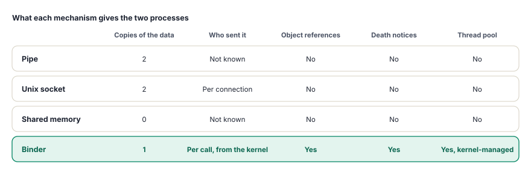
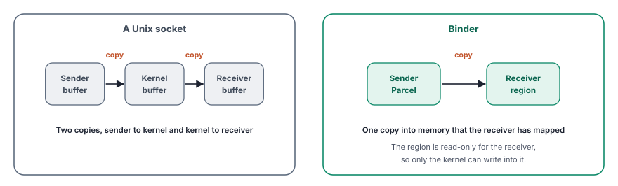
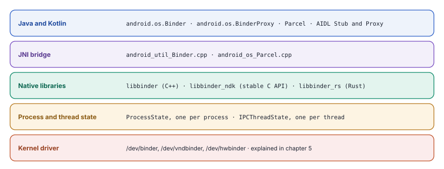
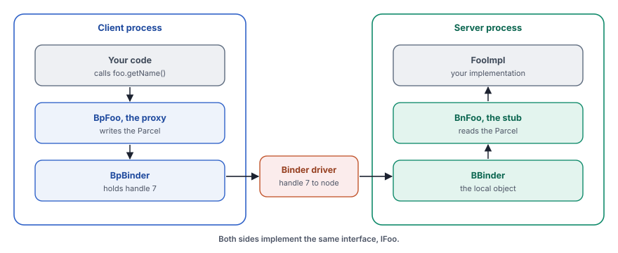
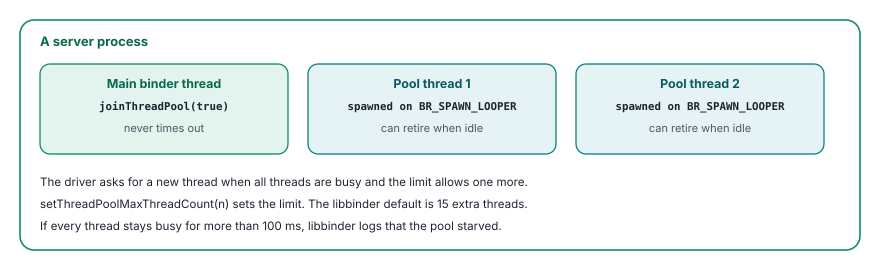
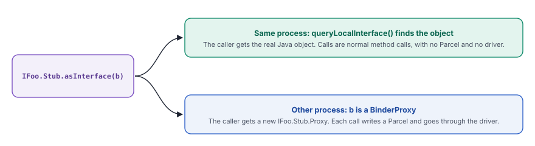
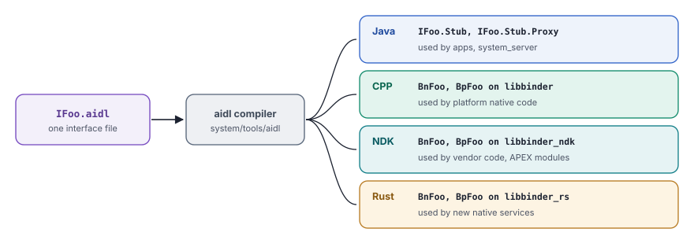
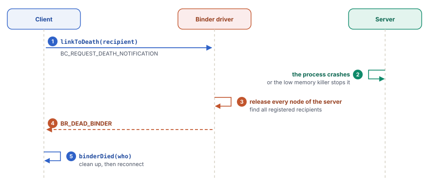
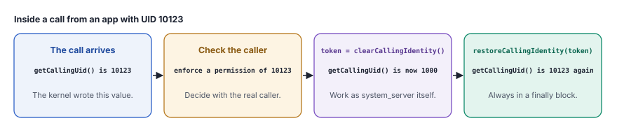
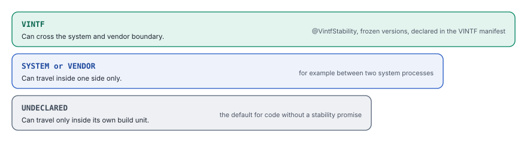

An inter-process communication system lets separate programs call each other safely, so that each program stays isolated and still uses the others.
Almost everything that an app does on Android crosses a process boundary. When an app starts an activity, the request goes to system_server. When it draws a frame, its buffers go to SurfaceFlinger. When it reads the location, the call goes to the location service and from there to a hardware abstraction layer (HAL). Each of these programs runs in its own process, with its own user ID and its own SELinux domain. Binder is the mechanism that carries every one of these calls.
This chapter explains Binder from the point of view of the code that uses it. It starts with the reasons why Android needs its own inter-process communication (IPC). It then follows one call from a proxy in the client to a stub in the server. On the way, it looks at the Parcel that carries the data and the thread that runs the method. Later sections cover the Android Interface Definition Language (AIDL), the service manager, death notifications, caller identity, the three Binder domains, stability and RPC Binder. The chapter ends with tools for debugging and with the changes in Android 17.
Chapter 5 already described the Binder driver inside the kernel. This chapter treats the driver as a black box with a clear contract and focuses on everything above it.
Why Android needs its own IPC
Linux already offers pipes, Unix domain sockets, shared memory and message queues. Each of them moves bytes from one process to another. Android needs more than bytes. A system service has to know exactly who called it, so that it can check a permission. A client has to hold a reference to one specific object in another process and learn when that process dies. All of this has to be fast on a phone with a small battery.
Binder was built for these needs. Its design comes from OpenBinder, a component framework that Be Inc. and later Palm developed in the early 2000s. Several of its engineers later joined the Android team and adapted the idea for Android. The driver started out in the staging area of the Android kernel and is now part of the upstream Linux kernel, in drivers/android/.

Five properties set Binder apart from the classic mechanisms.
- Caller identity for each call. The kernel attaches the user ID (UID), the process ID (PID) and optionally the SELinux context of the sender to every transaction. The sender cannot change these values, so the receiver can trust them.
- Object references. A client holds a reference to one object, not to a channel. The reference can travel to a third process, which then talks to the same object.
- One copy. The data moves from the sender into memory that the receiver mapped before. A socket needs two copies for the same message.
- Calls that wait and calls that do not. A normal call blocks until the reply arrives. A one-way call returns at once.
- A managed thread pool. The driver tells a server process when it needs another thread, so that busy services stay responsive.
One copy instead of two
When a process opens the Binder device, libbinder maps a region of about one megabyte into its address space. This region belongs to the process as a receiver. When a transaction arrives for it, the driver allocates space inside this region and copies the data of the sender straight into it. The receiver then reads the data where it already lies.

The receiver maps the region read-only, so only the kernel can write into it. The size of the region also sets a hard limit. All transactions that wait for one process share it. If a server falls behind and many large transactions pile up, new calls fail. Large data, such as bitmaps, therefore travels in shared memory or through a file descriptor, and Binder carries only a small handle to it.

The figure shows the layers that later sections walk through. Java code uses android.os.Binder and android.os.BinderProxy, which reach the native library through the Java Native Interface (JNI). Native code uses libbinder in C++, libbinder_ndk with its stable C interface or libbinder_rs in Rust. Below them, two small classes hold the state of a process and of each thread. All of these layers talk to the driver through one device file.
Proxies, stubs and handles
Binder hides the process boundary behind normal method calls. A client calls a method on an object that looks local. In reality, the object is a proxy. The proxy writes the arguments into a Parcel, sends the Parcel through the driver and waits. In the server, a stub reads the Parcel, calls the real method and writes the result into a reply Parcel. The client never sees any of this.

The client does not hold a pointer into the server. It holds a handle, a small number that is valid only in the client process. The driver keeps a table for each process and maps every handle to a node, the kernel record of one object in one server. When a Binder object travels in a Parcel, the driver translates it on the way. The server sends its local object, and the client receives a new handle that points to it.
This translation is why a reference cannot be forged. A process can only use handles that the driver gave it.
Handle 0 is special in every process. It always points to the context manager, the service manager of the domain. This is how every process finds the first service without any other reference.
Binder works like the internal phone system of a large office. You do not know where a colleague sits. You dial an extension, and the exchange connects you. The exchange also shows the receiver the number of the caller, and you cannot fake that caller ID. The front desk keeps the directory of extensions, just as the service manager keeps the directory of services. If a colleague leaves, the exchange tells everybody who asked to be informed.
The classes of libbinder
The C++ library libbinder in frameworks/native/libs/binder/ has a small set of core classes. Every other language binding mirrors the same structure.
![IBinder is the base class, with transact, linkToDeath and queryLocalInterface. BBinder is the local object in the server, with a final transact that calls the virtual onTransact. BpBinder is the proxy in the client, with a kernel handle or an RPC session. BnInterface of IFoo combines BBinder and IFoo. BpInterface of IFoo combines BpRefBase and IFoo. IFoo derives from IInterface and declares getName. The AIDL compiler generates BnFoo, with an onTransact switch, and BpFoo, which writes the Parcel. FooImpl, your code, derives from BnFoo and returns the value.](../../assets/img/diagrams/bd-classes.svg)
IBinder is the common base. Its most important method is transact(), which takes a transaction code, a data Parcel, a reply Parcel and flags. It also declares linkToDeath() for death notices and queryLocalInterface(), which returns the real object when it lives in the same process.
virtual status_t transact(uint32_t code,
const Parcel& data,
Parcel* reply,
uint32_t flags = 0) = 0;
enum {
FIRST_CALL_TRANSACTION = 0x00000001,
LAST_CALL_TRANSACTION = 0x00ffffff,
PING_TRANSACTION = B_PACK_CHARS('_', 'P', 'N', 'G'),
DUMP_TRANSACTION = B_PACK_CHARS('_', 'D', 'M', 'P'),
SHELL_COMMAND_TRANSACTION = B_PACK_CHARS('_', 'C', 'M', 'D'),
INTERFACE_TRANSACTION = B_PACK_CHARS('_', 'N', 'T', 'F'),
FLAG_ONEWAY = 0x00000001,
FLAG_CLEAR_BUF = 0x00000020,
};Codes from FIRST_CALL_TRANSACTION up belong to the methods of an interface. The codes that start with an underscore are meta-transactions that every Binder object understands. _PNG checks that an object is alive, and _DMP asks it to dump its state for dumpsys. _CMD runs a shell command such as cmd package list packages.
BBinder is a local object, the server side of a reference. Its transact() is marked final. It answers the meta-transactions itself and passes every other code to the virtual method onTransact(), which the generated stub overrides. This split guarantees that every service responds to a ping and a dump in the same way.
BpBinder is the proxy, the client side of a reference. It holds either a kernel handle or, for RPC Binder, a session and an address. Its transact() passes the call to IPCThreadState, which talks to the driver. BpBinder also counts the proxies of a process. If one process collects thousands of proxies, the count usually points to a leak, and the system can log the problem or stop the process.
On top of these, the templates BnInterface<IFoo> and BpInterface<IFoo> join a typed interface with the raw Binder classes. The prefix Bn stands for Binder native and Bp for Binder proxy. You rarely write these classes by hand, because AIDL generates them, as a later section shows.
ProcessState and IPCThreadState
Two classes hold the connection to the driver. ProcessState exists once per process. It opens the device, maps the receive region, keeps the table from handles to BpBinder objects and starts the thread pool. IPCThreadState exists once per thread. It holds two Parcels, mIn for data from the driver and mOut for data to the driver, and it stores the identity of the current caller.
#define BINDER_VM_SIZE ((1 * 1024 * 1024) - sysconf(_SC_PAGE_SIZE) * 2)
#define DEFAULT_MAX_BINDER_THREADS 15
#ifdef __ANDROID_VNDK__
const char* kDefaultDriver = "/dev/vndbinder";
#else
const char* kDefaultDriver = "/dev/binder";
#endif
sp<IBinder> ProcessState::getContextObject(const sp<IBinder>& /*caller*/)
{
sp<IBinder> context = getStrongProxyForHandle(0);
// ...
return context;
}The first line sets the size of the receive region, one megabyte minus two guard pages. The second line sets the default limit of extra binder threads. The device that a process opens depends on how it was built. Code built for the vendor partition with the old Vendor NDK (VNDK) opened /dev/vndbinder, and everything else opens /dev/binder. The last function shows how a process reaches the service manager. It asks for the proxy of handle 0.
A process cannot use Binder after fork(). The driver state belongs to the parent, so ProcessState installs fork handlers that mark the child as forked. Any later Binder call in the child stops the process with a clear error. For the same reason, Zygote does not use Binder. It receives its requests through a local socket, and each new app opens the driver for itself after the fork.
The life of one call
With the classes in place, a single call is easy to follow. The client thread writes a command, the driver moves the data, a server thread runs the method, and the reply travels back the same way. The commands that user space sends to the driver start with BC, for Binder command. The answers from the driver start with BR, for Binder return.
![A sequence diagram with the lanes Client thread, Binder driver, Server thread. Step 1, Client thread to Binder driver, BC_TRANSACTION, handle, code, Parcel. Step 2, Binder driver to Client thread, BR_TRANSACTION_COMPLETE, the client now waits for the reply. Step 3, Binder driver to Binder driver, copy into server region, adds caller UID, PID and SELinux context. Step 4, Binder driver to Server thread, BR_TRANSACTION, a waiting binder thread wakes up. Step 5, Server thread to Server thread, onTransact(code, data, reply), the stub runs your method. Step 6, Server thread to Binder driver, BC_REPLY, the reply Parcel. Step 7, Binder driver to Client thread, BR_REPLY, the client thread continues.](../../assets/img/diagrams/bd-transaction.svg)
- Write the request. The proxy fills a Parcel.
IPCThreadState::transact()adds aBC_TRANSACTIONcommand with the handle, the method code and the Parcel tomOut. - Hand it to the driver. One
ioctl()call withBINDER_WRITE_READsends the command and, in the same call, asks for anything that waits for this thread. The driver confirms the request withBR_TRANSACTION_COMPLETE. - Copy and stamp. The driver finds the node behind the handle and copies the Parcel into the receive region of the server. It adds the UID and PID of the caller and, on request, its SELinux context.
- Wake a server thread. A binder thread in the server that waits in the driver receives
BR_TRANSACTION. - Run the method.
IPCThreadStatecallstransact()on the targetBBinder, which callsonTransact()of the generated stub. The stub reads the arguments and calls your method. - Send the reply. The stub writes the result into the reply Parcel, and the thread sends it with
BC_REPLY. It also releases the receive buffer withBC_FREE_BUFFER. - Wake the client. The client thread receives
BR_REPLY, reads the reply Parcel and returns the result to the caller.
The client thread does all of its work inside one function, IPCThreadState::waitForResponse(). It loops over talkWithDriver() and handles each return code until the reply arrives.
status_t IPCThreadState::transact(int32_t handle, uint32_t code,
const Parcel& data, Parcel* reply,
uint32_t flags)
{
flags |= TF_ACCEPT_FDS;
err = writeTransactionData(BC_TRANSACTION, flags, handle, code, data, nullptr);
if (err != NO_ERROR) { /* ... */ }
if ((flags & TF_ONE_WAY) == 0) {
// A normal call: wait for BR_REPLY.
err = waitForResponse(reply ? reply : &fakeReply);
} else {
// A one-way call: wait only for BR_TRANSACTION_COMPLETE.
err = waitForResponse(nullptr, nullptr);
}
return err;
}The flag TF_ACCEPT_FDS allows the reply to carry file descriptors. The branch on TF_ONE_WAY is the only difference between a normal call and a one-way call on the client side.
One-way calls
A one-way call does not wait for a reply. The client returns as soon as the driver queues the transaction, so a slow server cannot block it. System services use one-way calls for callbacks to apps. An app that does not answer then cannot freeze system_server.
One-way calls have three rules. They cannot return a value or an error, because no reply exists. The driver delivers the one-way calls for one Binder object in the order of arrival. The server therefore never runs two of them for the same object at once. They also share a smaller part of the receive region of the server. A client that sends one-way calls faster than the server handles them fills that space, and the driver can then flag the client for spam.
Nested calls
A server sometimes calls back into its client while it handles a request. For example, process A calls a method in process B, and B calls a callback in A before it replies. The thread in A that waits for B is the natural place to run that callback, because it holds the right context. The driver therefore delivers the nested call to the waiting thread. The thread handles it inside waitForResponse(), sends the reply and then continues to wait for the answer from B. Without this rule, a deadlock can appear when every thread of A waits.
Flags of a transaction
| Flag | Value | Meaning |
|---|---|---|
TF_ONE_WAY | 0x01 | Do not wait for a reply. |
TF_ACCEPT_FDS | 0x10 | The reply can contain file descriptors. libbinder always sets it. |
TF_CLEAR_BUF | 0x20 | The driver clears the buffer after use, for secrets such as keys. |
TF_UPDATE_TXN | 0x40 | Replace a one-way call that still waits in the queue, instead of adding another one. |
The Parcel
A Parcel is the container for the data of one transaction. It is not a general serialization format, such as JSON. It is a flat buffer that both sides read in exactly the order in which it was written. The proxy writes the interface token and then each argument. The stub reads them in the same order. If the two sides disagree, the data makes no sense, which is why both are generated from the same AIDL file.
![A Parcel for foo.setOwner with the name Asha and a callback. It starts with the interface token android.example.IFoo, then an int with the length 4, the string Asha, a Binder object for the callback and an int at the end of the data. A separate offsets array holds the position of the callback. The receiver checks the interface token first, so a call for the wrong interface fails. The offsets array tells the driver where Binder objects and file descriptors sit. The driver turns each Binder object into a handle that is valid in the receiving process.](../../assets/img/diagrams/bd-parcel.svg)
Most values are plain bytes, such as integers and strings. Two kinds of values need help from the driver. A Binder object must become a handle that is valid in the receiving process. A file descriptor must become a new descriptor in the receiving process that points to the same open file. libbinder writes such values as flat_binder_object records and lists their positions in an offsets array. The driver walks this array, translates each record and leaves the plain bytes alone.
The interface token at the start protects the receiver. The stub calls enforceInterface(), which compares the token with the descriptor of its interface, such as android.app.IActivityManager. A Parcel that was built for a different interface fails this check before any argument is read. The token also carries a small header with the StrictMode policy of the caller, so that rules such as "no disk access on this thread" travel with the call.
Parcels in Java
Java code uses android.os.Parcel, a thin wrapper around the native Parcel. Apps meet it through the Parcelable interface, which a class implements to write its fields into a Parcel and read them back. Intents, Bundles and most framework types travel this way.
A Parcel is meant for one transaction in memory. It is not a storage format, because its layout can change between Android versions. Apps that save data to disk use a stable format instead.
All calls that wait for one process share its receive region of about one megabyte. A single large call can fail even when the region is mostly free, because other calls also need space. In Java, the failure appears as TransactionTooLargeException. The usual causes are large Bundles in an Intent, saved instance state that holds bitmaps, or long lists in one call. Send large data through a file, a ParcelFileDescriptor or shared memory. Pass only the handle through Binder.
Threads in a server
A service must answer many clients at the same time. Binder solves this with a pool of threads in each server process. Each thread in the pool waits in the driver for work. When a transaction arrives, the driver hands it to an idle thread.

A process starts its pool with ProcessState::startThreadPool(), which creates the first thread. A thread joins the pool with IPCThreadState::joinThreadPool() and then loops. In each round, it reads the next command from the driver and executes it.
void IPCThreadState::joinThreadPool(bool isMain)
{
mOut.writeInt32(isMain ? BC_ENTER_LOOPER : BC_REGISTER_LOOPER);
mIsLooper = true;
status_t result;
do {
processPendingDerefs();
result = getAndExecuteCommand(); // wait, then run one command
if (result == TIMED_OUT && !isMain) {
break; // an extra thread can retire
}
} while (result != -ECONNREFUSED && result != -EBADF);
mOut.writeInt32(BC_EXIT_LOOPER);
mIsLooper = false;
}The first command tells the driver what kind of thread this is. BC_ENTER_LOOPER marks a main thread that never times out. BC_REGISTER_LOOPER marks a thread that the driver asked for with BR_SPAWN_LOOPER. Such a thread can leave the pool when it has nothing to do.
The limit of extra threads comes from setThreadPoolMaxThreadCount(). The default in libbinder is 15. Each service picks a value that fits its load. system_server uses a large pool because thousands of calls arrive from apps. The service manager uses none at all, because it handles every request on one thread with an event loop.
When all threads stay busy for more than 100 milliseconds, libbinder logs a message that the pool starved. This message usually means that one method holds a lock for too long or makes a slow call of its own.
Priority follows the caller
A server thread does not run at a fixed priority. When a call comes from a background thread, libbinder moves the receiving thread into the background as well. Background work then does not steal time from the foreground. For real-time threads, such as those of audio and display, the driver can pass the real-time priority to the server thread during the call. A service enables this with setInheritRt(true) on its BBinder. Without it, a high-priority audio thread could wait behind a low-priority server thread.
Binder in Java
Most framework services are written in Java, and every app talks to them from Java or Kotlin. The Java layer mirrors the native one. android.os.Binder is the local object and corresponds to BBinder. android.os.BinderProxy is the proxy and corresponds to BpBinder. The JNI code in frameworks/base/core/jni/android_util_Binder.cpp connects each Java object to its native partner.
Generated AIDL code adds one more helper, asInterface(). A client calls it with the IBinder that it received, for example in onServiceConnected(). The method checks whether the object lives in the same process.

This shortcut matters for apps that bind to their own services. A call within one process is a normal method call on the same thread. It does not cross the driver, and the caller identity stays the identity of the process itself.
Java services read the caller with Binder.getCallingUid() and Binder.getCallingPid(). They check permissions with Context.enforceCallingPermission() and related methods, which use the same caller identity. A later section explains how to switch this identity off and on again safely.
AIDL, the interface language
A proxy and a stub must agree on every detail, such as the code of each method and the order of the arguments. Writing this code by hand is slow and full of chances for mistakes. The Android Interface Definition Language (AIDL) removes that work. You describe the interface once, and the compiler writes the proxy and the stub for each language.
package android.example;
import android.example.IFooCallback;
interface IFoo {
// A normal call. The client waits for the result.
String getName();
// in: the data goes from the client to the server only.
void setOwner(in String name, in IFooCallback callback);
// A one-way call. The client returns at once.
oneway void ping();
}The syntax looks like Java. An interface declares methods, and each method has a return type and typed parameters. Parameters that are not primitive types carry a direction. in sends data from the client to the server. out sends it back in the reply, and inout does both. Choose in unless you need the other two, because each extra direction costs another copy of the data.

The compiler lives in system/tools/aidl/ and supports four backends. The Java backend serves apps and system_server. The CPP backend uses libbinder and serves native code inside the platform. The NDK backend uses libbinder_ndk, whose interface stays stable across releases. Vendor code and modules that update through Google Play, called APEX modules, must use the NDK or the Rust backend. They cannot depend on the private libbinder of the platform.
The generated Java code
For IFoo, the Java backend writes one file with an interface and two nested classes. IFoo.Stub extends android.os.Binder and is the base class of your service. IFoo.Stub.Proxy is the proxy that clients receive from asInterface(). A shortened view of the generated stub shows how a call arrives.
@Override
public boolean onTransact(int code, Parcel data, Parcel reply, int flags)
throws RemoteException {
switch (code) {
case TRANSACTION_getName: {
data.enforceInterface(DESCRIPTOR);
String _result = this.getName();
reply.writeNoException();
reply.writeString(_result);
return true;
}
case TRANSACTION_setOwner: {
data.enforceInterface(DESCRIPTOR);
String _arg0 = data.readString();
IFooCallback _arg1 = IFooCallback.Stub.asInterface(data.readStrongBinder());
this.setOwner(_arg0, _arg1);
reply.writeNoException();
return true;
}
}
return super.onTransact(code, data, reply, flags);
}Each method becomes one case of a switch on the transaction code. The stub checks the interface token, reads the arguments in order, calls your method and writes the result. Exceptions do not cross the boundary as Java objects. The stub writes a status code, and readException() in the proxy turns it back into an exception, such as SecurityException or IllegalArgumentException.
The proxy does the opposite. It writes the interface token and the arguments, calls mRemote.transact() with the code of the method and reads the reply.
@Override
public String getName() throws RemoteException {
Parcel _data = Parcel.obtain();
Parcel _reply = Parcel.obtain();
try {
_data.writeInterfaceToken(DESCRIPTOR);
mRemote.transact(Stub.TRANSACTION_getName, _data, _reply, 0);
_reply.readException();
return _reply.readString();
} finally {
_reply.recycle();
_data.recycle();
}
}Transaction codes and order
The compiler numbers the methods in the order in which the file declares them. The first method gets FIRST_CALL_TRANSACTION, which is 1. The second method gets 2, the third gets 3 and so on. The number, not the name, travels in the transaction. This is why the order of methods matters so much.
Suppose that a new version inserts a method in the middle. Every later method then gets a new number, and an old client calls the wrong method. The rules for stable interfaces, which a later section explains, forbid such changes.
Types
| AIDL | Java | C++ (CPP backend) | Rust |
|---|---|---|---|
int, long | int, long | int32_t, int64_t | i32, i64 |
boolean | boolean | bool | bool |
String | String | String16, or std::string with @utf8InCpp | String |
T[], List<T> | array, List | std::vector<T> | Vec<T> |
IBinder, interfaces | IBinder | sp<IBinder> | SpIBinder |
ParcelFileDescriptor | ParcelFileDescriptor | ParcelFileDescriptor | ParcelFileDescriptor |
AIDL also defines its own types. A structured parcelable lists its fields in AIDL, and the compiler writes the code that reads and writes them in every backend. An enum needs a backing type, such as @Backing(type="int"). A union holds exactly one of several fields, together with a tag that says which one. The annotation @nullable allows a null value, which becomes std::optional in C++ and Option in Rust.
@JavaDerive(toString=true, equals=true)
parcelable ConnectionInfo {
String host;
int port = 443;
@nullable String proxy;
}An unstructured parcelable is different. It only names a Java class that implements Parcelable, such as parcelable Bundle;. The compiler cannot see its fields, so such types work only in Java and cannot appear in stable interfaces.
Useful annotations
| Annotation | Effect |
|---|---|
oneway | The method, or every method of the interface, does not wait for a reply. |
@nullable | A parameter or return value can be null. |
@utf8InCpp | A string becomes std::string in C++ instead of String16. |
@VintfStability | The type can cross the boundary between the system and vendor partitions. |
@EnforcePermission | The generated stub checks a permission before your method runs. |
@Backing(type="int") | Sets the integer type behind an enum. |
The annotation @EnforcePermission deserves attention. A missing permission check is one of the most common bugs in system services. With this annotation, the check moves into generated code, and a lint check in the build reports methods whose annotation and code do not match.
The build module
In the platform, an AIDL interface is a Soong module of the type aidl_interface. The module names the source files, the backends and, for stable interfaces, the frozen versions. The build system then creates one library for each backend and each version, such as android.example.foo-V1-ndk.
aidl_interface {
name: "android.example.foo",
srcs: ["android/example/*.aidl"],
stability: "vintf",
backend: {
cpp: { enabled: false },
java: { enabled: true },
ndk: { enabled: true },
rust: { enabled: true },
},
versions_with_info: [
{ version: "1", imports: [] },
],
}Apps do not use Soong. In an app project, AIDL files live in src/main/aidl/. The Android Gradle plugin compiles them to Java when the module enables buildFeatures.aidl. The "Try it yourself" section at the end of this chapter uses this path.
The service manager
A client needs a first reference before it can call anything. The service manager provides it. It is a small native program that keeps a table from names, such as activity or package, to Binder objects. Every process reaches it through handle 0, so no other reference is needed to start.
The source is in frameworks/native/cmds/servicemanager/. init starts it very early, in the init stage of the boot, as chapter 4 described. It is marked critical, so the device reboots if it crashes several times in a short period. When it restarts, init also restarts the services that depend on it, because their registrations are gone.
int main(int argc, char** argv) {
const char* driver = argc == 2 ? argv[1] : "/dev/binder";
sp<ProcessState> ps = ProcessState::initWithDriver(driver);
ps->setThreadPoolMaxThreadCount(0);
ps->setCallRestriction(ProcessState::CallRestriction::FATAL_IF_NOT_ONEWAY);
IPCThreadState::self()->disableBackgroundScheduling(true);
sp<ServiceManager> manager = sp<ServiceManager>::make(std::make_unique<Access>());
manager->setRequestingSid(true);
manager->addService("manager", manager, false,
IServiceManager::DUMP_FLAG_PRIORITY_DEFAULT);
IPCThreadState::self()->setTheContextObject(manager);
if (!ps->becomeContextManager()) {
LOG(FATAL) << "Could not become context manager";
}
sp<Looper> looper = Looper::prepare(false);
BinderCallback::setupTo(looper);
ClientCallbackCallback::setupTo(looper, manager, binderCallback);
SetProperty("servicemanager.ready", "true");
while (true) { looper->pollAll(-1); }
}A few lines explain the whole design. The program opens /dev/binder by default, and the same binary serves the vendor domain when it gets another device as its argument. It asks for no extra threads and handles every request in one event loop. It must never make a blocking call itself, because every process in the system depends on it, so FATAL_IF_NOT_ONEWAY stops the process if it tries. setRequestingSid(true) asks the driver to include the SELinux context of every caller. becomeContextManager() then claims handle 0 for this process, and the property servicemanager.ready tells the rest of the system that lookups now work.
Registering and finding a service
A service registers itself with addService(), and a client finds it with getService(), checkService() or waitForService(). Both directions go through the same checks.
![A sequence diagram with the lanes Service process, servicemanager, SELinux policy, Client process. Step 1, Service process to servicemanager, addService("foo", binder), a call to handle 0. Step 2, servicemanager to SELinux policy, may the caller add "foo"?, service_contexts gives the label. Step 3, SELinux policy to servicemanager, allowed. Step 4, servicemanager to servicemanager, store name and binder, and link to its death. Step 5, Client process to servicemanager, getService("foo"), also a call to handle 0. Step 6, servicemanager to SELinux policy, may the caller find "foo"?. Step 7, SELinux policy to servicemanager, allowed. Step 8, servicemanager to Client process, reply with the binder, the driver turns it into a new handle. Step 9, Client process to Service process, calls on the new handle, go straight to the service.](../../assets/img/diagrams/bd-servicemanager.svg)
addService() rejects a call from an app UID at once, because apps must never publish system services. It then asks SELinux whether the caller can add this name. The name maps to a type in service_contexts, such as activity_service, and the policy lists which domains can add and find that type. The name must use only letters, digits and the characters _ - . /, with at most 127 characters. For a HAL, the service manager also checks that the device declares the name in its Vendor Interface (VINTF) manifest, a topic of chapter 10. Finally, it links to the death of the new service, so that a crash removes the entry.
bool Access::canFind(const CallingContext& ctx, const std::string& name) {
return actionAllowedFromLookup(ctx, name, "find");
}
bool Access::canAdd(const CallingContext& ctx, const std::string& name) {
return actionAllowedFromLookup(ctx, name, "add");
}
bool Access::actionAllowed(const CallingContext& sctx, const char* tctx,
const char* perm, const std::string& tname) {
const char* tclass = "service_manager";
return 0 == selinux_check_access(sctx.sid.c_str(), tctx, tclass, perm, &data);
}The SELinux class service_manager has the permissions add, find and list. A rule in the policy, such as allow appdomain app_api_service:service_manager find;, lets every app find the services whose type carries the attribute app_api_service, such as the activity manager. A missing rule makes the service invisible to that domain, even though it is registered. The denial appears in the kernel log as an avc: denied message.
The lookup methods differ in how they wait. checkService() returns at once, with null if the name is unknown. getService() can also ask init to start a service that is declared but not running, and it waits a short time. waitForService() registers for a notification and blocks until the service appears, without polling. New code uses waitForService() or, for HALs, waitForDeclaredService(), which first checks that the device declares the service at all.
Lazy services
Some services are needed only now and then, such as a HAL for a fingerprint sensor during enrollment. A lazy service starts when the first client asks for it and stops when the last client is gone. It registers through LazyServiceRegistrar or, in the NDK, AServiceManager_registerLazyService(). Every five seconds, the service manager checks whether such services still have clients and tells them when the count drops to zero. The service can then unregister and exit, which frees its memory until the next request.
dumpsys and the service command
Two shell tools talk to the service manager. service list prints every registered name, and service call sends a raw transaction to a service, which is useful for tests. dumpsys looks up a service and sends it DUMP_TRANSACTION together with a file descriptor. The service writes its state into that descriptor. dumpsys activity, dumpsys package and every other dump work this way.
Death notifications
Processes on a phone come and go. The low memory killer stops cached apps, and a bug can crash a service. A client that holds a reference must learn about it, so that it can release resources or reconnect. Binder delivers this information as a death notification.

A client registers a recipient with linkToDeath(). When the server process ends for any reason, the driver releases its nodes and sends BR_DEAD_BINDER to every process that registered for one of them. libbinder then calls binderDied() on each recipient.
class DeathRecipient : public virtual RefBase {
public:
virtual void binderDied(const wp<IBinder>& who) = 0;
};
virtual status_t linkToDeath(const sp<DeathRecipient>& recipient,
void* cookie = nullptr,
uint32_t flags = 0) = 0;The system relies on this mechanism everywhere. ActivityManagerService links to the death of every app process and cleans up its activities and services when it dies. The service manager links to every registered service. A client of a HAL links to the HAL, so that it can wait for the restarted HAL and connect again. A call to a dead object fails with DEAD_OBJECT in native code and DeadObjectException in Java.
A newer, related mechanism reports frozen processes. Android freezes cached apps to save power. A synchronous call to a frozen process fails, and a client can register a FrozenStateChangeCallback to learn when the target freezes and thaws. The client can then wait and call again later.
The identity of the caller
The identity of the caller is the base of the permission model. A service decides with the UID and PID that the driver attached to the transaction. In native code, IPCThreadState::getCallingUid() and getCallingPid() return them. In Java, Binder.getCallingUid() and Binder.getCallingPid() do the same. When the server requested it, getCallingSid() also returns the SELinux context of the caller.
Sometimes a service must do work with its own rights after it checked the caller. For example, the activity manager checks that an app can start an activity. It then reads system settings that the app itself cannot read. For this, the service clears the caller identity for a short time.

public void doSomething() {
// 1. Check the real caller.
mContext.enforceCallingPermission(MY_PERMISSION, "doSomething");
int callingUid = Binder.getCallingUid();
// 2. Work with the rights of the service.
final long token = Binder.clearCallingIdentity();
try {
readSettingsForUser(UserHandle.getUserId(callingUid));
} finally {
// 3. Always restore the caller.
Binder.restoreCallingIdentity(token);
}
}The order matters. A check after clearCallingIdentity() always passes, because the caller is then the service itself. A missing restoreCallingIdentity() leaves the thread with the wrong identity, and the next check on that thread can pass for the wrong caller. Both mistakes caused real security bugs in the past, which is why the finally block and the lint checks for this pattern exist.
Binder carries identity, not authority. The driver tells the service exactly who called, but the service itself must check the permission. Every method that changes state or returns private data needs such a check.
Three Binder domains
Before Android 8.0, every process used one Binder device. Project Treble then split the system into a framework side and a vendor side, so that each side gets its own updates. To keep the two sides apart at the level of IPC, Android 8.0 added two more devices, each with its own service manager. A domain is one device together with its manager and the processes that use it.
![Three domains. The framework domain uses /dev/binder with servicemanager and AIDL. Apps, system_server and native services use it, and since Android 11 also the AIDL HALs of the vendor. It is in use. The HAL domain uses /dev/hwbinder with hwservicemanager and HIDL. Framework and vendor talk to HIDL HALs there. It is kept only for devices that still ship them and is deprecated. The vendor domain uses /dev/vndbinder with vndservicemanager and AIDL, for vendor process to vendor process calls. AOSP now advises stable AIDL on /dev/binder, and the domain is deprecated.](../../assets/img/diagrams/bd-domains.svg)
| Device | Service manager | Interfaces | Used between |
|---|---|---|---|
/dev/binder | servicemanager | AIDL | Apps and framework processes. Since Android 11, also framework and vendor through stable AIDL HALs. |
/dev/hwbinder | hwservicemanager | HIDL | Framework and vendor, and vendor and vendor, through HIDL HALs. HIDL is deprecated. |
/dev/vndbinder | vndservicemanager | AIDL | Vendor processes among themselves. AOSP marks this path as deprecated and recommends the NDK or Rust backends of stable AIDL instead. |
The HAL Interface Definition Language (HIDL) came with Treble as the language for HALs, and hwservicemanager managed its services. Android 10 introduced stable AIDL, and Android 11 allowed HALs in AIDL. Since then, AIDL HALs register with the normal servicemanager on /dev/binder, and AOSP treats HIDL as deprecated. On a device without any HIDL HAL, hwservicemanager notices that HIDL is not supported, sets the property hwservicemanager.disabled and stops.
The vendor service manager is the same program as servicemanager, built with one difference. It does not check VINTF declarations, because only the framework side needs them. Its service names come from vndservice_contexts instead of service_contexts.
SELinux keeps the domains apart. A neverallow rule stops framework processes from opening /dev/vndbinder. On the framework device, the checks happen at the level of names. The rules for adding and finding each service decide who can talk to whom, as the section on the service manager showed.
Stability
An interface between the system and the vendor partition is a promise. The vendor partition of a phone can stay unchanged for years while the system partition receives new Android versions. Each new system must still understand the old vendor code, so the interfaces between them can only grow in ways that keep old code working. Binder enforces this with stability levels.

libbinder stamps every local object with a level when it is created. The class Stability in frameworks/native/libs/binder/ defines the levels. Code without any promise is UNDECLARED and stays inside its own build unit. Objects marked SYSTEM or VENDOR can travel among the processes of one partition. Only VINTF objects can cross the boundary. When a transaction tries to pass an object to a place that its level does not allow, libbinder refuses it.
An AIDL interface becomes VINTF-stable through three steps. Every type carries @VintfStability. The build module sets stability: "vintf". The interface is frozen at numbered versions, and the device declares the version that it provides in its VINTF manifest. Chapter 10 follows these steps for a real HAL.
Rules for stable AIDL
Stable AIDL arrived in Android 10. The build system stores each frozen version of an interface in an aidl_api/ folder and compares every change with the last frozen version. Only changes that old code can live with are allowed.
- Add a method at the end of an interface.
- Add a field at the end of a parcelable, with a default value.
- Add a constant, an enum value or, from Android 12, a field at the end of a union.
Removing, renaming or reordering is never allowed, because the transaction codes and the layout of the Parcel then change. A new client can ask the server for its version with getInterfaceVersion() and avoid new methods on an old server. If it calls such a method anyway, the call fails with UNKNOWN_TRANSACTION in C++, STATUS_UNKNOWN_TRANSACTION in the NDK and a RemoteException in Java.
Binder across virtual machines
Kernel Binder needs both processes on the same kernel, because the driver moves the data. Android now runs code in places with a different kernel. Examples are protected virtual machines of the Android Virtualization Framework and the Trusted Execution Environment (TEE). RPC Binder, added in Android 12, brings the Binder model to such places. It keeps the proxies, stubs, Parcels and AIDL interfaces and replaces the driver with a protocol over sockets.
![Left, kernel Binder through /dev/binder in one kernel, with one copy through a mapped region, the caller UID and PID from the kernel, a thread pool managed by the driver and death notices from the driver. Right, RPC Binder over Unix, vsock, TCP or TIPC sockets, with normal socket send and receive, identity from TLS or socket rules, a thread pool in user space and death when the connection closes. Both use the same AIDL interfaces, so a service can move into a virtual machine without new interface code.](../../assets/img/diagrams/bd-rpc.svg)
The main classes are RpcServer, which accepts connections, and RpcSession, which a client opens. The transport is a Unix socket, a vsock link to a virtual machine, TCP for tests or a Trusty channel to the TEE. A BpBinder can therefore hold either a kernel handle or a session and an address, as the earlier code showed.
Some guarantees change with the transport. The kernel no longer provides the caller UID. A server therefore relies on the rules of the socket or on Transport Layer Security (TLS) certificates. A death notice becomes a closed connection, and the data needs normal socket copies. Since Android 16, the service manager can also return an accessor for a service that lives behind RPC Binder. The client then connects to that service by name, as if it were a local one.
Debugging Binder
Most Binder problems show up as a failed call, a slow system or a leak. A few tools cover nearly all of them.
| Tool | What it shows |
|---|---|
service list, dumpsys -l | Every service that the service manager knows. |
service check NAME | Whether one service is registered. |
dumpsys NAME | The state that a service writes in response to DUMP_TRANSACTION. |
dumpsys activity binder-proxies | Binder proxies per UID, to find a leak. |
/sys/kernel/debug/binder/ | The state of the driver, the transactions of each process and recent failures. It needs root. |
Perfetto with the binder events | Every transaction on a timeline, with sender, receiver and duration. |
The error codes point to the cause. DEAD_OBJECT means that the server died. FAILED_TRANSACTION often means that the receive region of the target was full, for example because the server is slow or the call was too large. PERMISSION_DENIED comes from an SELinux check. BAD_TYPE means that the interface token did not match. UNKNOWN_TRANSACTION means that the server does not know the method code, often because it runs an older version.
A leak of Binder proxies grows slowly and then breaks a process. Each proxy uses a handle in the driver and memory in the client. libbinder watches the count of proxies for each UID. When one UID passes a high limit, the system logs a warning. system_server can then kill the app that holds too many references to it.
The Binder model stays the same in Android 17. The changes make failures easier to understand and reach more places.
- A clear error for frozen targets. A call to a frozen process used to fail with the general
FAILED_TRANSACTION. Behind a build flag, libbinder now returnsFROZEN_OBJECT, so that a client can wait for the target to thaw and call again. - Reports pushed from the driver. A new generic netlink channel lets a daemon subscribe to Binder errors as they happen. Each report names the binder context, the sender and the target, so failures no longer need to be collected from debugfs.
- Better statistics. The optional Binder observer records the latency of served calls in histograms and flags callers that send too many calls.
- Cheaper identity handling.
clearCallingIdentity()no longer reads the UID of the process each time. It reads the UID only when code asks for it, which saves a system call on a busy path ofsystem_server. - RPC Binder for more of the platform. The accessor interfaces of RPC Binder now reach more native code outside the core platform. Clients can then call services in protected virtual machines by name.
Binder is the main path through which an app reaches privileged code. Every method of a system service is part of the attack surface of the device.
- Check every caller. The driver delivers a true identity, but it does not stop a call. Each method that changes state or returns private data must check a permission or the UID itself, or use
@EnforcePermission. - Check before you clear. Make all checks before
clearCallingIdentity(), and restore the identity in afinallyblock. - Treat every Parcel as untrusted. A malicious app can send any bytes to an exported interface. Check lengths, ranges and object types before you use them. Parsing bugs in Parcelable code led to privilege escalation in the past.
- Use SELinux to hide services. A service that a domain cannot find is a service that it cannot attack. Keep the
findrules as narrow as possible. - Mark secrets. Send keys and passwords with
FLAG_CLEAR_BUF, so that the driver clears the buffer after use. - Protect against floods. Use one-way calls for callbacks to untrusted apps, so that a stuck app cannot block a system thread.
- Binder turns a call to another process into a normal method call, through a proxy, a Parcel and a stub.
- The kernel attaches the UID, PID and SELinux context of the caller to every call, and nobody can forge them.
- A handle is valid only in its own process. The driver translates object references as they travel, so references cannot be forged either.
- AIDL generates the proxy and the stub. Method numbers come from the order in the file, so stable interfaces only grow at the end.
- The service manager owns handle 0 and maps names to objects, with SELinux checks for every add and find.
- Today, framework services and AIDL HALs share
/dev/binder. Stability levels decide which objects can cross between system and vendor.
For the curious, source files Optional
| Path | Content |
|---|---|
frameworks/native/libs/binder/ | libbinder, with Binder.cpp, BpBinder.cpp, Parcel.cpp, ProcessState.cpp, IPCThreadState.cpp and Stability.cpp |
frameworks/native/libs/binder/ndk/ | libbinder_ndk, the stable C interface for vendor code and APEX modules |
frameworks/native/libs/binder/rust/ | The Rust binding |
frameworks/native/libs/binder/RpcServer.cpp, RpcSession.cpp | RPC Binder |
frameworks/native/cmds/servicemanager/ | The service manager, with main.cpp, ServiceManager.cpp and Access.cpp |
frameworks/base/core/java/android/os/Binder.java, BinderProxy.java, Parcel.java | The Java layer |
frameworks/base/core/jni/android_util_Binder.cpp | The JNI bridge between Java and libbinder |
system/tools/aidl/ | The AIDL compiler and its backends |
system/hwservicemanager/ | The HIDL service manager |
system/sepolicy/private/service_contexts | The SELinux labels of service names |
To read the client side of a call, start at BpBinder::transact() and follow IPCThreadState::transact(), writeTransactionData() and waitForResponse(). For the server side, start at IPCThreadState::executeCommand() and its case for BR_TRANSACTION, which calls BBinder::transact(). The driver itself is in drivers/android/binder.c of the kernel tree, which chapter 5 introduced.
On an emulator or a test device. Look at the registered services and talk to one of them.
adb shell service list | head -20
adb shell service check activity
adb shell dumpsys -l | wc -l
adb shell dumpsys activity binder-proxies | head -20
adb shell ls -l /dev/binder /dev/hwbinder /dev/vndbinder
adb shell ps -A -T | grep -c "binder:"The last command counts the threads named binder:PID_N, which are the binder threads of every process. With a root shell on an emulator image, you can also read the state of the driver.
adb root
adb shell cat /sys/kernel/debug/binder/stats | head -40
adb shell cat /sys/kernel/debug/binder/failed_transaction_logIn an app. Build a small service that runs in a second process, so that every call really crosses Binder. In Android Studio, enable AIDL in the app module with android { buildFeatures { aidl = true } }. Then add the interface.
package com.example.echo;
interface IEcho {
String echo(String text);
int callerUid();
}The service returns the text and the UID that Binder reports for the caller.
class EchoService : Service() {
private val binder = object : IEcho.Stub() {
override fun echo(text: String?): String =
"Echo from pid ${Process.myPid()}: $text"
override fun callerUid(): Int = Binder.getCallingUid()
}
override fun onBind(intent: Intent): IBinder = binder
}Declare the service in the manifest with its own process. The name after the colon creates a private process for the app.
<service
android:name=".EchoService"
android:process=":echo"
android:exported="false" />In an activity, bind to the service and call it.
private val connection = object : ServiceConnection {
override fun onServiceConnected(name: ComponentName, service: IBinder) {
val echo = IEcho.Stub.asInterface(service)
Log.i("Echo", echo.echo("hello"))
Log.i("Echo", "My pid ${Process.myPid()}, caller uid ${echo.callerUid()}")
}
override fun onServiceDisconnected(name: ComponentName) {}
}
override fun onStart() {
super.onStart()
bindService(Intent(this, EchoService::class.java), connection, BIND_AUTO_CREATE)
}
override fun onStop() {
super.onStop()
unbindService(connection)
}The log shows two different process IDs, and the UID equals the UID of your app, because both processes belong to it. Remove the line with android:process and run the app again. The PIDs now match, and asInterface() returns the service object itself, so the calls no longer cross the driver. While the service runs in its own process, adb shell ps -A | grep echo shows it. On an emulator with adb root, stop that process with adb shell kill PID, and the activity receives onServiceDisconnected().
Key terms
- IPC
- Inter-process communication, the exchange of data and calls between processes.
- Binder
- The IPC system of Android, with a kernel driver and libraries in every language.
- Transaction
- One call through Binder, with a code, a data Parcel and, for normal calls, a reply.
- Parcel
- The flat container for the data of one transaction.
- Handle
- A number that refers to a Binder object in another process and is valid only in its own process.
- Node
- The kernel record of one Binder object in one server process.
- Proxy
- The client side of a reference,
BpBinderin C++ andBinderProxyin Java. - Stub
- The server side generated by AIDL, which reads the Parcel and calls the real method.
- Context manager
- The process behind handle 0, the service manager of a domain.
- AIDL
- Android Interface Definition Language, which describes an interface for the compiler.
- One-way call
- A call that returns at once and gets no reply.
- Death notification
- A message from the driver that the process behind a reference died.
- Calling identity
- The UID, PID and SELinux context of the caller of the current transaction.
- Binder domain
- One Binder device with its own service manager, such as
/dev/binder. - Stability level
- A mark on a Binder object that decides how far it can travel, up to across the system and vendor boundary.
- Stable AIDL
- AIDL with frozen versions that only grow in compatible ways.
- RPC Binder
- Binder over sockets, for processes that do not share a kernel.
- Lazy service
- A service that starts on the first request and stops when it has no clients.